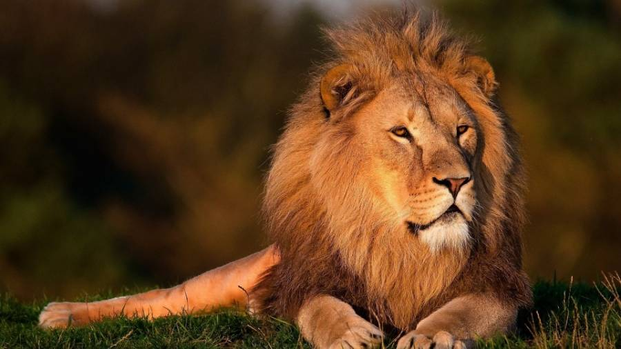

Os Leões
OBJETIVO
O objetivo da página é, de forma interativa e de fácil entendimento, frisar a importãncia da manuntenção da savana africana, em especial a vida dos leões. Por mais que não sejam animais "de fácil acesso", a sua preservação é de suma importãncia para o equilibrio ecológico das savanas africanas. Você está convidado para saber mais do animal, conhecendo mais sobre suas características, curiosidades e até mesmo representações na nossa cultura
AJUDA
Um dos objetivos dessa página é também dar visibilidade para as causas em prol da manutenção da vida dos leões, como exemplo, podemos citar a WildLife ACTumas das principais atuantes nessa luta.